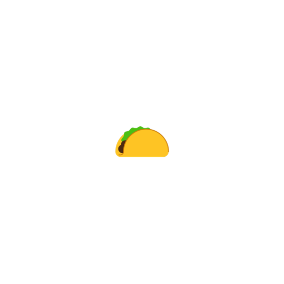
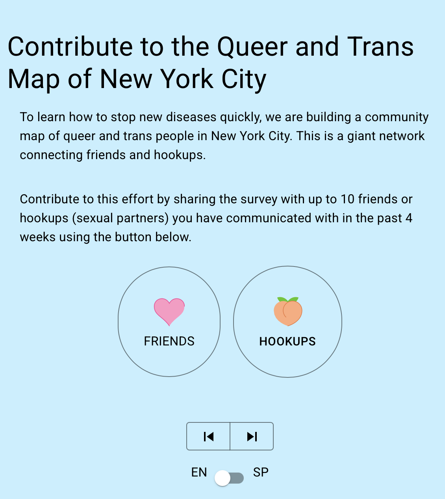

Code
plot_icon(icon_name = "taco", color = "light_purple", shape = 16, alpha = 0, size = 100, image_size = 0.2)
As part of the MPX NYC survey, we developed a digital tool called the MPX NYC Person–Place Network Mapper. We describe its design, functionality, and implementation.
We designed, tested, and implemented the MPX NYC Person–Place Network Mapper to meet practical and ethical challenges in collecting sensitive spatial data within an anonymous survey. Our goal was to capture information on venues visited by participants—including those where sexual activity occurred—while minimizing the risk of reidentification through location data.
Working in partnership with a back-end web developer, we led the design of a survey tool capable of collecting:
Throughout, we sought to reduce participant burden and ensure that no identifying information was collected.
Because participants were unlikely to recall precise addresses or ZIP codes, we integrated the Google Maps API to allow them to identify locations by business name, landmark, cross-street, subway station, or neighborhood. The map displayed standard navigation tools and detailed geographic information to aid orientation (see Figure D.1).

At the beginning of the survey, participants were asked to locate their primary residence on the map. Later, they identified venues where they had physical or sexual contact in group settings. Each map tap placed a marker and triggered follow-up questions about the type of venue and activities that occurred there.
We developed an anonymous link-tracing system using URL parameters to construct a participant network. At survey initiation, each respondent received a unique identifier card containing a QR code and word combination.

At the end of the survey, participants were invited to share a pre-written recruitment message containing their unique URL with social or sexual contacts. When a contact completed the survey using this link, an edge was automatically added between the two respondents in the Neo4j graph database. If a new participant shared a link with someone who had already completed the survey, the latter could confirm the connection by entering the code from their identifier card, linking their nodes without revealing identities.
The tool’s front end was developed by the principal investigator as a single-page React/Next.js application hosted on Vercel, with design elements based on the MPX NYC style guide. Standard survey question formats (e.g., multiple choice, free text) were combined with the custom place-mapping and link-tracing components. The back end comprised a custom Neo4j graph database connected to the front end through a study API.
Survey questions were carefully designed to avoid collecting any direct or indirect identifiers, such as names, email addresses, IP addresses, or exact geographic coordinates. Age was recorded as a categorical variable rather than an integer to further reduce identifiability.
To protect participant privacy, geographic coordinates were converted into census tract identifiers on the participant’s device before transmission to the database. Census tracts represent U.S. geographic areas containing 2,500–8,000 residents.
When a participant began the survey, the front end parsed referral identifiers and language settings from the access URL. This information was sent to the study API, which generated a public–private identifier pair and stored it in a secure table. The API then returned the public identifier to the participant.
Upon survey completion, responses were transmitted to the API, which replaced public identifiers with private ones before saving the data to the database. The identifier-pair table was stored separately and deleted after data collection concluded.
Each spatial input generated precise coordinates through the Google Maps API. These were immediately processed on the front end through the FCC API to obtain census block identifiers, which were then truncated to census tracts. Only the census tract identifiers were transmitted to the study database.
We conducted two rounds of usability testing with approximately ten participants each to refine the survey interface and workflow. The final instrument and study protocol were reviewed and approved by the Harvard T.H. Chan School of Public Health Institutional Review Board (IRB22-0761).
targets::tar_read(config_list)[[1]][["variables"]] |>
purrr::map(
function(x) return(paste0(
"::: {.callout }\n\n# ",
x[["label"]],
"\n\n",
x[["question"]],
"\n\n",
paste(x[["response_options"]], collapse = "; "),
"\n\n:::"
))
) |>
paste(collapse = "\n\n") |>
cat()Acknowledgements: The survey instrument was designed by Keletso Makofane and coded by Keletso Makofane (front end) and Imran Ansari (back end). Sudipta Saha found the web service that allowed us to safely collect spatial data. Seema Kara wrote the initial technical specifications for the instrument. neo4j granted a concessionary licence for the graph database system we used for the back end. Pedro Carneiro and Nguyen Tran led the development of survey questions. Cody Nolan and Anton Antón Castellanos Usigli conducted translation from English to Spanish. Robert Pitts helped to design questions on suspected mpox symptoms.
Lead author: Keletso Makofane, MPH, PhD. Editor: Nicholas Diamond, MPH. (Published: June 2025).
plot_icon(icon_name = "taco", color = "light_purple", shape = 16, alpha = 0, size = 100, image_size = 0.2)